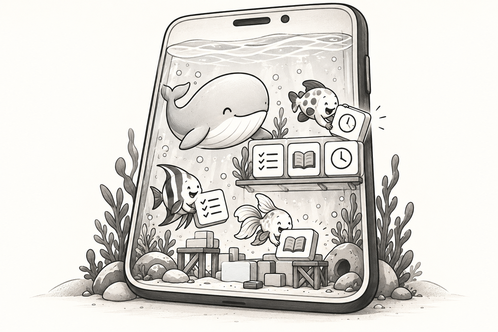
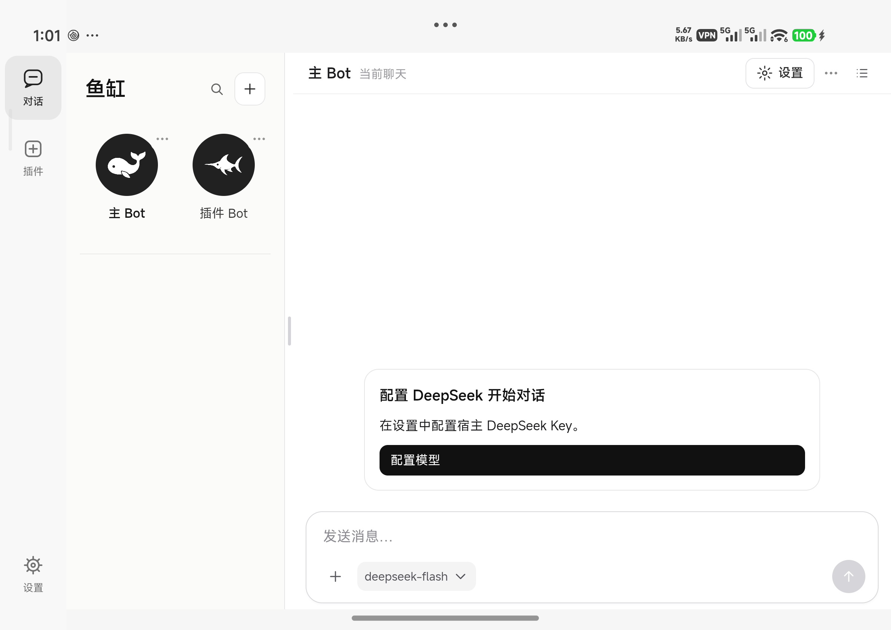
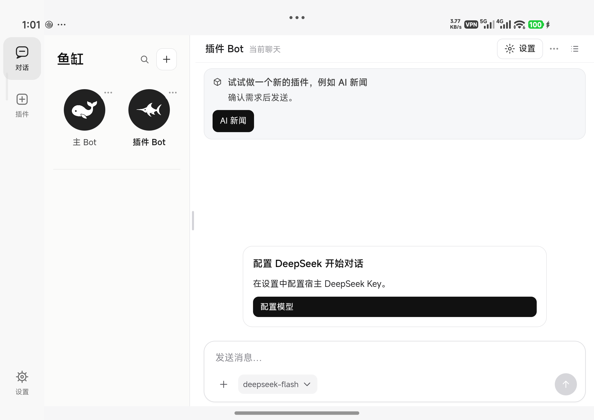
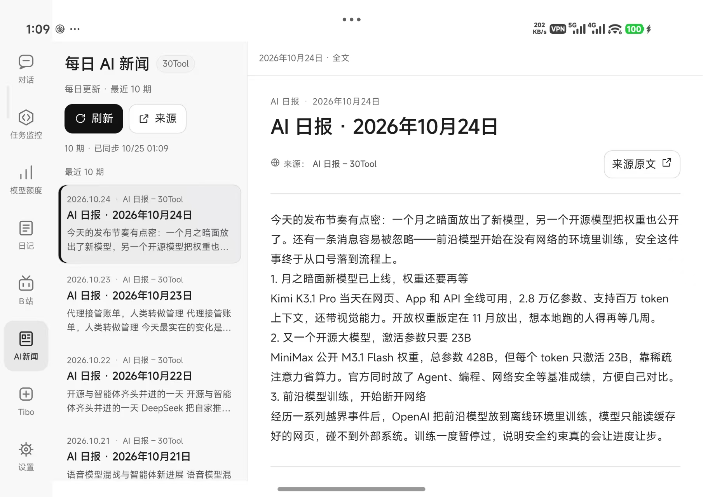

在鱼缸里养不同的鱼（Bot），再布置插件，满足自己的需求。
一个基于 DeepSeek Agent Harness 的开源 Android App。和鱼聊天，让鱼帮你做工具，把工具留在自己的鱼缸里。

需要一个工具 → 拿起鱼缸，找鱼做 → 鱼做完，放进鱼缸 → 享受你的工具。
全程在手机上完成，不用连接电脑。当然，你也可以用电脑搭建自己的鱼缸远端服务器，连接需要的服务。
第一次使用，点左侧的「插件」，把想做的工具告诉鱼。做好的工具会作为插件留在鱼缸里，随时打开使用。比如阅读器、待办清单，或者只适合你自己的小工具。
你需要自己的 DeepSeek API Key。鱼在手机上执行任务，模型推理通过网络调用服务。
对话首页

插件引导

AI 新闻插件示例（独立安装）

截图来自小米 18 Fold，已适配平板布局。
DeepSeek 的形象是一只鲸鱼。主 Bot 是缸里的大鲸鱼，其他 Bot 是各有分工的小鱼。每条鱼有自己的职责、工作区、记忆和聊天归档，也能互相传消息、一起做事。
插件就像鱼缸里的置景。你需要什么，就往里面布置什么，每个人养出来的鱼缸都不一样。
鱼缸提供多 Bot 对话、文件与网页工具，以及插件需要的网络、模型、媒体、语音、预览和后台能力。插件按需制作、独立安装，不预装业务工具。
账号、聊天、记忆和已安装插件保存在你自己的环境中，不随源码分发。插件与 Agent 工具共享应用身份，请只安装可信代码。详见 安全说明。
鱼缸 Core 采用 GPL-3.0-only。第三方组件保留各自的许可证，详见 第三方声明。
Keep different fish (Bots) in your tank, then add plugins to make it fit your needs.
An open-source Android app built on DeepSeek Agent Harness. Chat with your fish, ask them to build tools, and keep those tools in your own tank.
Need a tool → Open YuGang and ask a fish → The fish builds it and adds it to your tank → Enjoy your tool.
Do it all on your phone, without connecting a computer. You can also use a computer as your own remote server for YuGang and connect the services you need.
To begin, tap Plugins and tell a fish what you want. The finished tool becomes a plugin in your tank, ready whenever you need it: a reader, a to-do list, or something made just for you.
Bring your own DeepSeek API key. Tasks run on your phone; model inference uses an online service.
Chat home
Plugin guide
AI news plugin example (installed separately)
Screenshots captured on a Xiaomi 18 Fold. Tablet layouts are supported.
“YuGang” means fish tank. DeepSeek is represented by a whale, so the main Bot is the big whale and the other Bots are smaller fish with their own jobs. Each fish has its own role, workspace, memory and chat archives. They can exchange messages and work together.
Plugins are the things you add to your tank. Add what you need; everyone ends up with a different environment.
YuGang provides multi-Bot chat, file and web tools, plus networking, models, media, speech, previews and background tasks for plugins. Build and install plugins as needed; business tools are not preinstalled.
Accounts, chats, memories and installed plugins stay in your own environment and are not distributed with the source. Plugins and Agent tools share the app identity, so install only trusted code. See SECURITY.md.
YuGang Core is GPL-3.0-only. Third-party components retain their own licenses; see THIRD_PARTY_NOTICES.md.